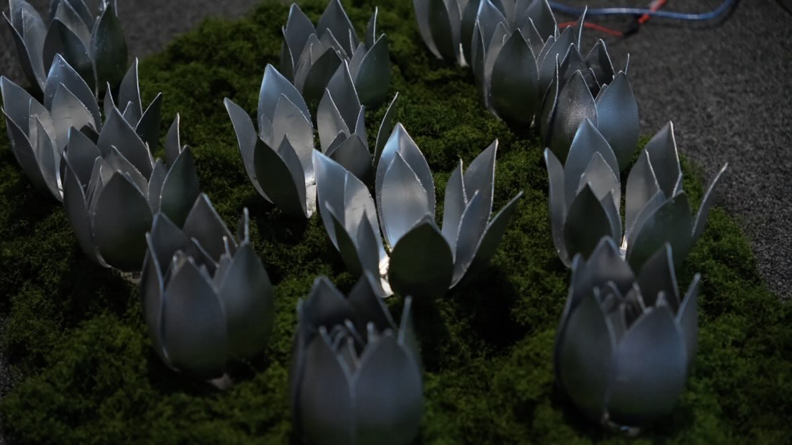
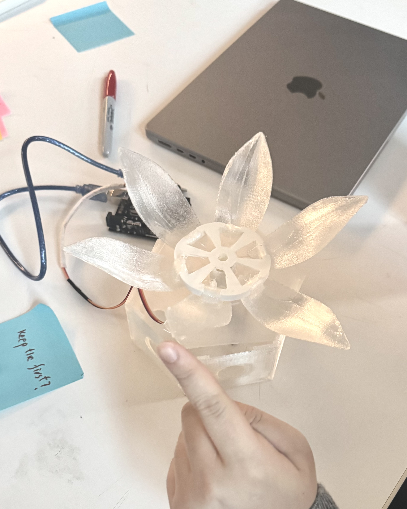
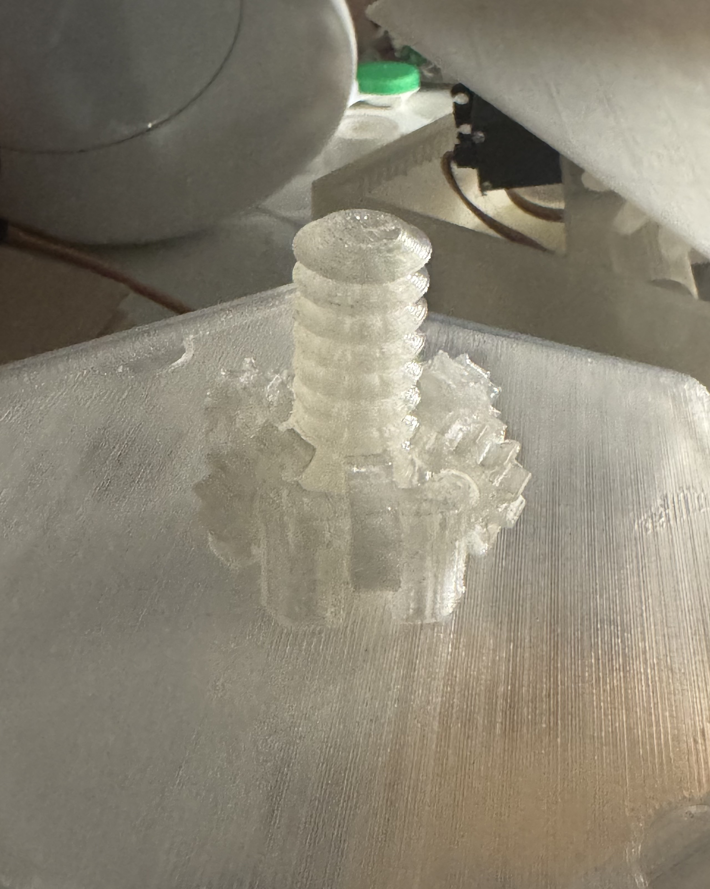
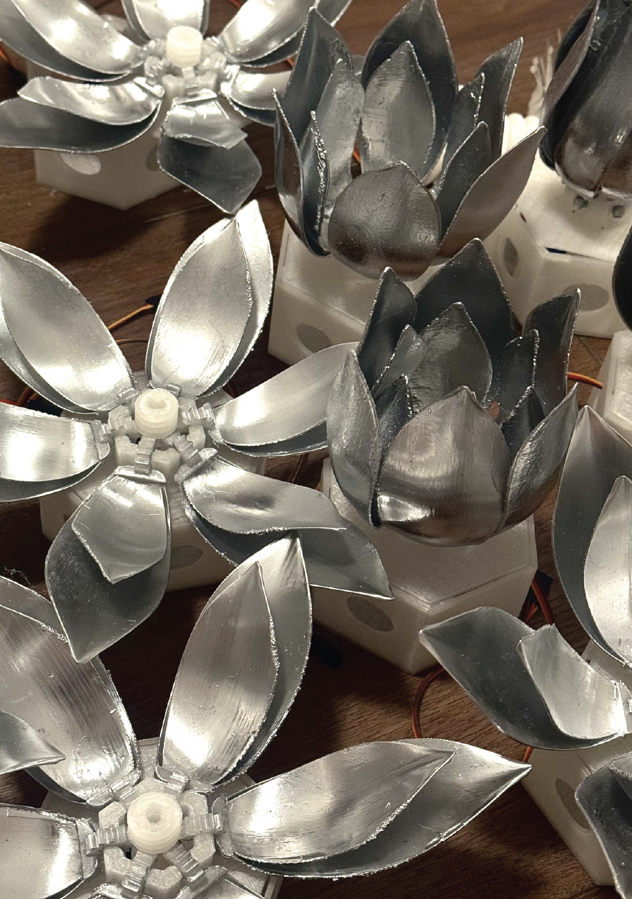
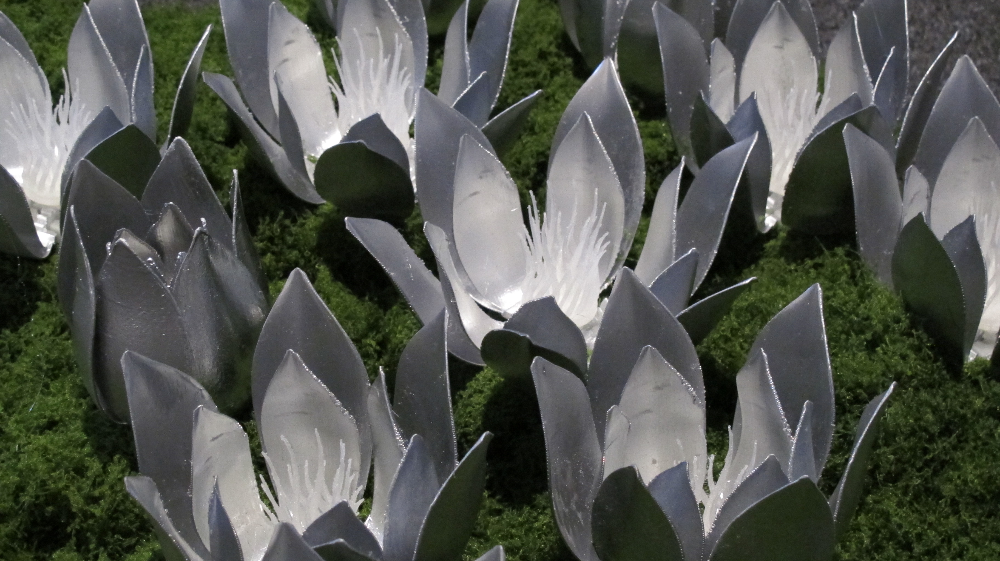
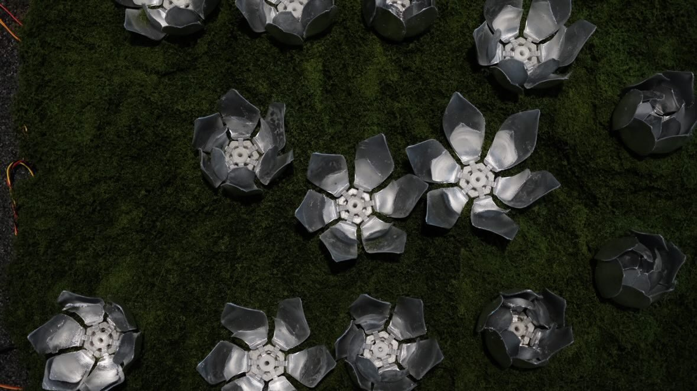

When The Flower Stops Breathing
August 2025 - May 2026
Responsibilities
Designer · Programmer · Engineer · Fabricator
Tools
Python · Open CV · Raspberry Pi · Bash · Webcam · Electronics · 3D Printed Mechanism · C++
How can humans recognize their presence within nature as an active force rather than a distant observer?
How do humans coexist with the living environment in a way that creates balance rather than destruction?
These are the two main question that based my college senior thesis project.
We damage habitats and prioritize growth at the expense of long-term stability. Yet, our survival is tied directly to a healthy environment: when the ecosystem suffers, human life suffers with it.
Modern life often creates the illusion that environmental destruction exists somewhere distant and disconnected from our daily actions. Through kinetic movement and responsive interaction, this project reveals how human presence can alter surrounding systems, emphasizing the delicate balance between coexistence and disruption.

When The Flower Stops Breathing is an interactive kinetic sculpture composed of a cluster of mechanical flowers that continuously bloom and close, echoing the subtle rhythms of living ecosystems. It asks a simple but uneasy question: what happens to a system when it is constantly observed, approached, and disturbed?
The sculpture responds to human presence: when viewers observe from a respectful distance, the flowers move harmoniously, but prolonged or overwhelming interaction begins to disrupt their motion and behavior. As viewers attempt to understand what affects the sculpture’s behavior, they are invited into conversation and collective observation. The goal is not to prevent interaction, but to encourage a balance where people can engage closely with the work without disrupting the ecosystem it represents.


The Interaction
The sculpture responds to human proximity and duration of engagement. At a balanced distance, the flowers move in a calm, rhythmic cycle-open, close, breathe.
But when presence becomes prolonged or too intense, the system begins to shift. Movement becomes irregular. Timing slips. The "breathing" loses stability.
Interaction is not a trigger, it is a condition. The environment changes based on how it is occupied.

Process
First prototype 3D model (petal movements controlled by tension)

First prototype user testing

Prototype 10 3D model.
for detailed breakdown, please refer to zine documentation

Early stage of rack + pinion mechanism for petal movement
Prototype 10 + cardboard reinforcements after troubleshooting
First working automated prototype + glimpse of the mechanism

3D model of big flower, inspired by the endangered Rafflesia Arnoldii
Big flower

Painted flower petals

Setting up, wiring, coding the flowers as a group

In progress flower cluster
First look of the cohesive movement + interaction testing
Documentation

Center pieces added


Show installation diagram
Documentation and Write up
Read further about the inspiration, goals, artist statement, and sketches in these zines.
My Experience Programming the System
Through building this project, I became more aware of how easily systems lose stability when scaled into interaction. What began as a simple mechanical flower quickly turned into a study of sensitivity, how small inputs accumulate into larger behavioral shifts. The most challenging part was not the construction of motion, but the calibration of response: finding the point where interaction becomes disruption.
It was also challenging to communicate the project's intention clearly. A recurring point of feedback centered around the use of manmade materials while discussing themes of environmental fragility and human impact on nature. However, that contrast became an important part of the work itself. The combination of organic floral forms with mechanical movement and plastic materials acts as commentary on the irony of the topic, how something visually delicate and beautiful can still be constructed from artificial materials tied to human advancement and consumption. I wanted the piece to create a sense of discomfort and reflection around that contradiction, while also being mindful that the work itself is preserved rather than treated as something disposable.
This project sits between observation and participation. It made me rethink what it means for something to feel "alive," and how perception changes when behavior is no longer fixed.
Key Learnings
1. Interaction requires careful balance
Designing responsive systems taught me that even small user inputs can significantly affect behavior, making calibration as important as the physical construction itself.
2. Motion can drive the user experience
Through programming rhythmic "breathing," I explored how subtle movement can make an artificial object feel emotionally and biologically alive, which is relevant in this project to communicate an emotional effect through mechanical forms.
3. Participation creates responsibility
Allowing viewers to influence the flower's behavior transformed them from passive observers into active participants, encouraging reflection on how human actions impact fragile ecosystems.